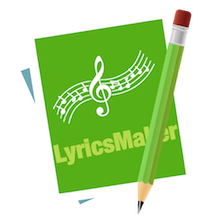

LyricsMaker
Version 1.2
The designedly util to make lyrics sheets easy.
LyricsMaker is a small util that was designed to conveniently make lyrics sheet for music or generate subtitle for movie, and later them can be easily synthesised by LitterFox. It do one thing in a simple way, i.e, listen audio or watch video and make time marks by simple clicks.
The app generate accurate lyrics sheet or subtitle file using two file, i.e, an audio or video file and a plain text file, so the text file required to be prepared to match the audio or video content before processing. The app was designed to simplify the work of synchronising subtitle with audio or video. In daily usage scenarios, you needs to listen audio or watch video only once.
It's free!

If you can't open the link above, please launch App Store and found LyricsMaker by searching.
Screenshot

Steps
- Step 1: Click button to open the plain text file for lyrics words, it will parse the file line by line automatically.
- Step 2: Click button to load the audio or video file and then click the "Play" button, when the playing of the audio or video at the point that you want to add a time mark for a segment of sentence, click the sentence in the right side box, the sentence will be automatically copied to the left side box with its time mark. Continue this process until the playing of the audio or video completed.
- Step 3: After the playback of the audio or video file completed, check on the option "Synchronising Lyrics" and then click "Play" button, this time the app will playback the audio or video and display the generated lyrics sheet at the bottom of the black area. (of course, you can ignore this step and goto "Step 1" to start another audio or video.)
- Step 4: When you satisfied with the result, open TextEdit and create a new plain text file, copy the content of the left side box into the file, save it as the final lyrics sheet.
Tips
- At Step 2, you can slide the progress bar to an arbitrary position that you want seek the audio or video to there as a new start point.
- At Step 2, you can click "Pause" button to pause playing and input a very accurate time value to be a new start point of playing. click button and then input the time value to seek to the point that you want to set.
Note: the time value must has correct format, e.g: 01:40:43 or 40:43. (you can also copy the time mark from the left side box and paste it into the field.) - At anytime, you can click "Pause" button to pause playing and edit the content of the left side box just like in TextEdit, and then continue until done.
- You can insert more blank lines into the raw lyrics words file to make it looks better before you process it.
Refrences
 LittleFox, the designedly small util that used to synthesis subtitle with audio and video in a comfortable way.
LittleFox, the designedly small util that used to synthesis subtitle with audio and video in a comfortable way.
 my music video site: http://unkown.org, my creative artworks made by LyricsMaker and LittleFox.
my music video site: http://unkown.org, my creative artworks made by LyricsMaker and LittleFox.
Lyrics sheet header
[ti: Song Title]
[ar: Artist]
[al: Album](optional)
[00:00.00] xxx
[00:xx.xx] ... ...
The lyrics sheet usually have a header like above, please refer the format here.
Example
[ti:Interlude] [ar:Morrissey] [00:00.00]Interlude - Morrissey [00:08.00]Time, is like a dream, [00:14.26]Now, for a time, you are mine. [00:20.80]Let's hold fast, to the dream, [00:26.17]that tastes and sparkles like wine. [00:35.70]Who knows if it's real, [00:38.57]or just something we're both dreaming of. [00:44.72]What seems like an interlude now, [00:51.18]Could be the beginning of love. [00:59.16]Loving you, is the world that's strange, [01:04.69]So much more than my heart can hold, [01:10.84]Loving you makes the whole world change. [01:16.94]Loving you, I could not grow old. [01:22.02]No, No nobody knows, [01:27.16]When love will end, [01:30.82]so 'til then, sweet fiend. [01:35.95]Time, is like a dream [01:41.03]and, now, for a time, You are mine. [01:47.14]Let's hold fast to the dream [01:52.78]that tastes and sparkles like wine. [02:03.15]Who knows if it's real, [02:04.65]or just something we're both dreaming of. [02:10.81]What seems like an interlude now, [02:16.96]Could be the beginning of love. [02:23.04]What seems like an interlude now, [02:29.73]Could be the beginning of love.